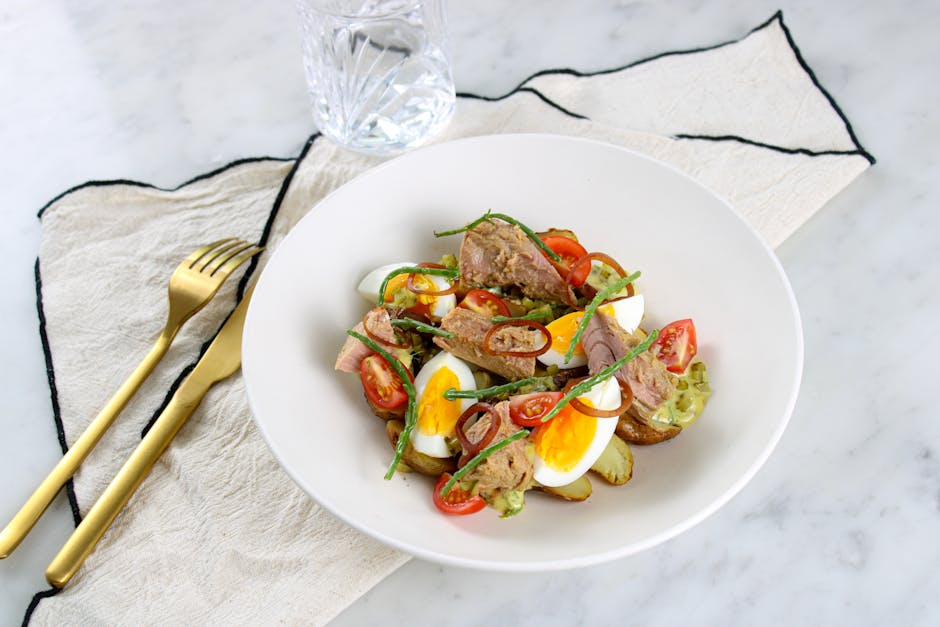
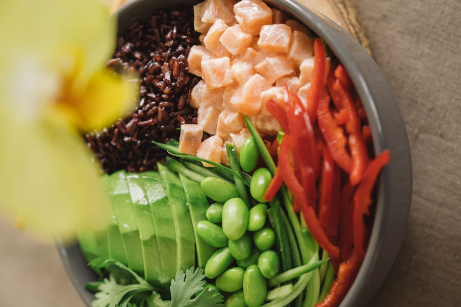
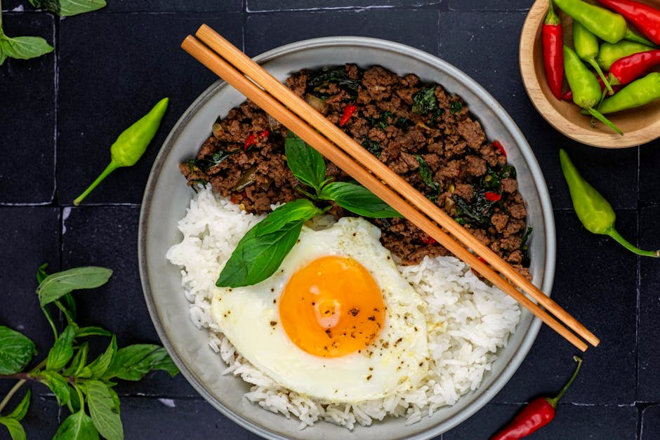
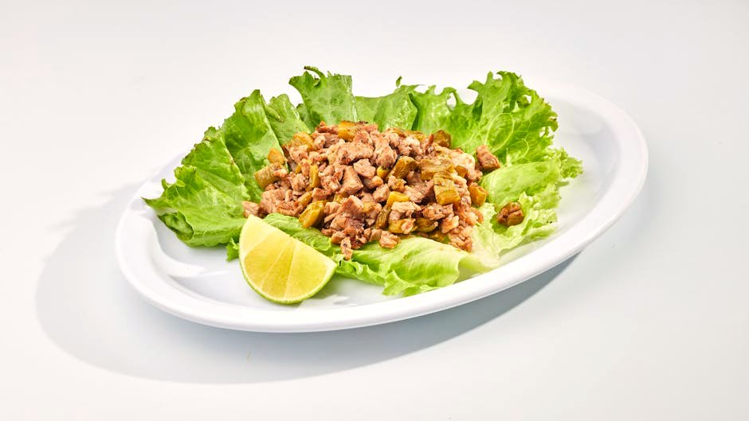
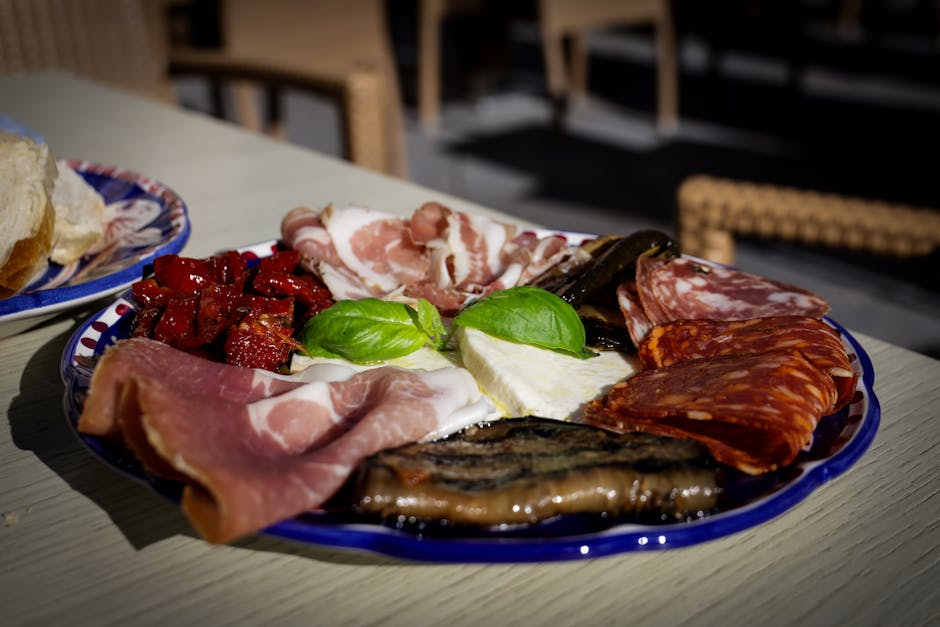

High-Protein Lunch Ideas
A proper high-protein lunch is the difference between an afternoon of focus and an afternoon of snack drawers. These 25 lunches — big salads, bowls, wraps and protein plates — each land about 70 g of protein with almost no sugar, and most pack well for work.
25 recipes · every one lands ≈70 g of protein with under 20 g net carbs · tap any card for the full recipe, macros & dietary swaps
 Grilled Chicken & Feta Power Bowl
Grilled Chicken & Feta Power Bowl
 Tuna & Avocado Salad Lettuce Wraps
Tuna & Avocado Salad Lettuce Wraps
 Turkey Cobb Salad
Turkey Cobb Salad
 Shrimp & Avocado Cauliflower-Rice Bowl
Shrimp & Avocado Cauliflower-Rice Bowl
 Chicken Caesar Salad (No Croutons)
Chicken Caesar Salad (No Croutons)
 Beef & Broccoli Stir-Fry
Beef & Broccoli Stir-Fry
 Egg Salad & Smoked Turkey Protein Plate
Egg Salad & Smoked Turkey Protein Plate
 Sesame Tofu & Edamame Bowl
Sesame Tofu & Edamame Bowl
 Chicken Shawarma Salad Bowl
Chicken Shawarma Salad Bowl
 Seared Tuna Niçoise-Style Salad
Seared Tuna Niçoise-Style Salad
 Buffalo Chicken Lettuce Cups
Buffalo Chicken Lettuce Cups

Smoked Mackerel & Egg Protein Plate Tuna & Cottage Cheese Stuffed Peppers
Tuna & Cottage Cheese Stuffed Peppers
 Pork Carnitas Cauliflower-Rice Bowl
Pork Carnitas Cauliflower-Rice Bowl

Teriyaki Salmon Poke Bowl
Thai Beef Larb Lettuce Cups Chicken Tikka Salad Bowl
Chicken Tikka Salad Bowl
 Korean Beef Bulgogi Cauliflower Bowl
Korean Beef Bulgogi Cauliflower Bowl
 Greek Chicken & Feta Salad Bowl
Greek Chicken & Feta Salad Bowl

Turkey Club Lettuce Wrap
Italian Antipasto Protein Plate Edamame & Tofu Poke Bowl
Edamame & Tofu Poke Bowl
 Grilled Halloumi Greek Salad Bowl
Grilled Halloumi Greek Salad Bowl
 Prawn & Egg Protein Salad
Prawn & Egg Protein Salad
 Smoked Trout & Egg Salad Plate
Smoked Trout & Egg Salad Plate
More collections: High-Protein Breakfast Ideas · High-Protein Dinner Recipes · High-Protein Snacks · Vegetarian High-Protein Recipes · Quick High-Protein Meals (Under 30 Minutes) · High-Protein, Low-Calorie Meals · High-Protein Meal Prep Recipes